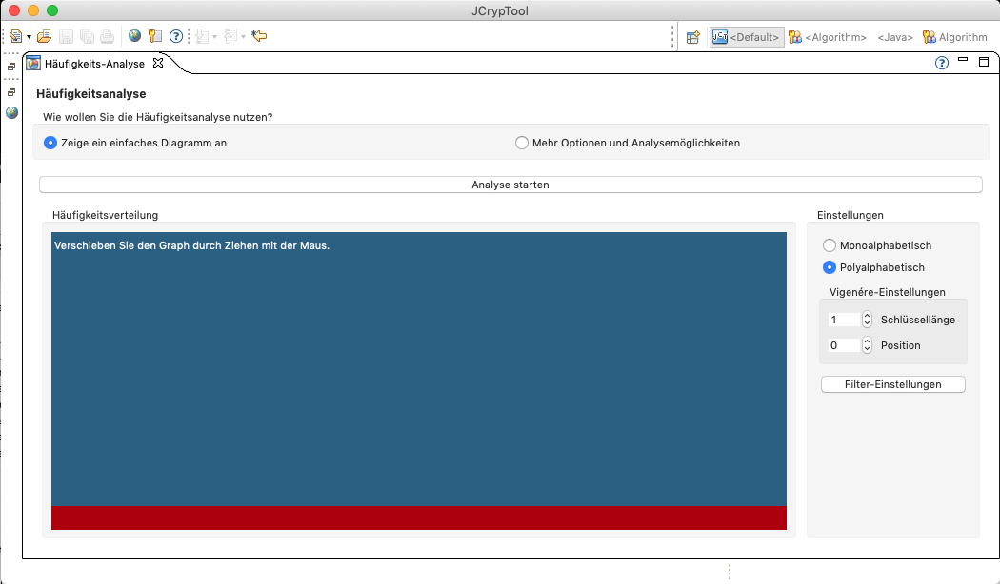
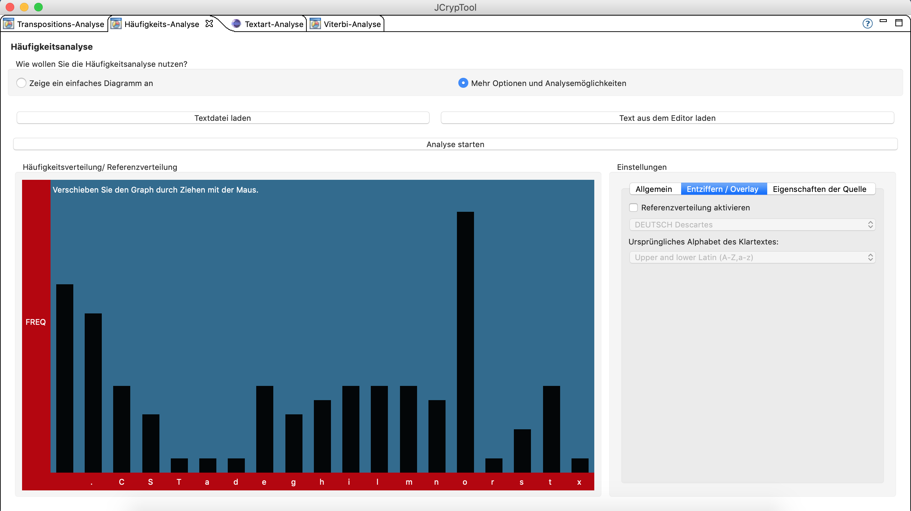

Die Häufigkeitsanalyse zählt die Anzahl des Auftretens aller Buchstaben im analysierten Text. Sie können dieses Plug-in in zweierlei Weise nutzen:
einfache Ansicht ("zeige einfaches Diagramm an"): Die Häufigkeitsanalyse wird als Graph dargestellt, der mit der Maus verschoben und durch die Filter-Einstellungen von ungewünschten Buchstaben befreit und verschiedenen anderen Transformationen unterzogen werden kann.
Die erweiterte Ansicht stellt mehr Analyseoptionen zur Verfügung, die im zweiten Tab der Einstellungen zu finden sind:

Die erste Möglichkeit, den Text besser zu analysieren, ist die Möglichkeit, ein Overlay über den Graphen legen zu lassen, welches eine Referenzverteilung anzeigt. Die Quelle dieser Referenzverteilung kann im darunter angezeigten Dropdown-Feld ausgewählt werden.
Im zweiten Dropdown-Feld haben Sie die Möglichkeit festzulegen, in welchem Bereich das Overlay angezeigt werden soll. Dieses Feld wird bei jeder Analyse automatisch auf ein passendes Alphabet eingestellt, aber Sie können auch ein anderes Alphabet festlegen. Wichtig: Das Verwenden eines Alphabets, welches mächtiger als das Alphabet (unterschiedlichen Buchstaben) des untersuchten Textes, wird die Entzifferung (Feld darunter) höchst wahrscheinlich fehlschlagen lassen.
Die Entzifferungswerkzeuge helfen bei der Entzifferung eines Vigenère-verschlüsselten Geheimtextes. Finden Sie die Schlüssellänge des Schlüssels heraus, der den Geheimtext erzeugt hat, und stellen Sie diese Länge in den allgemeinen Einstellungen bei "Polyalphabetisch" ein. Verschieben Sie nun bei eingeschaltetem Overlay den Graphen so, dass er gut mit dem Overlay zusammenzupassen scheint. Sie haben damit einen Buchstaben des Schlüssels an der gerade eingestellten Position (Allgemeine Einstellungen-Poyalphabetisch-Position) ermittelt. Speichern Sie diese Position mit dem entsprechenden Button darunter, und fahren Sie dadurch automatisch bei der nächsten Position fort. Schritt für Schritt wird so der Schlüssel ermittelt. Dieser wird im Feld unterhalb der Buttons angezeigt, kann aber auch per Klick darauf manuell gesetzt werden.

Wie das Friedman-Test-Plug-in ist auch die Häufigkeitsanalyse in den Vigenère Helper integriert. Sie können den gefundenen Schlüssel per Klick auf den untersten Button in "Entzifferungswerkzeuge" dorthin exportieren.